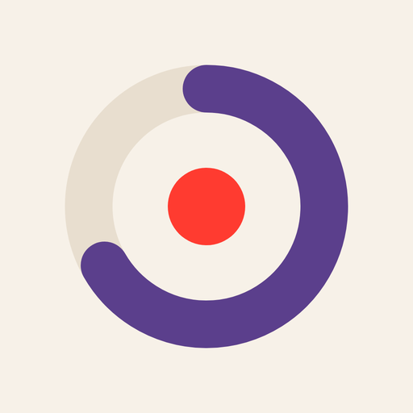
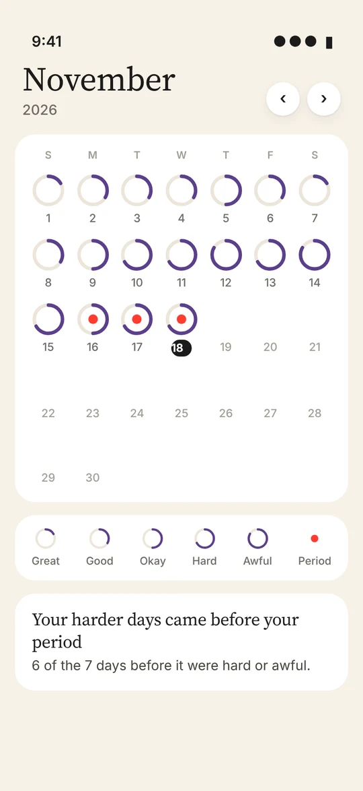
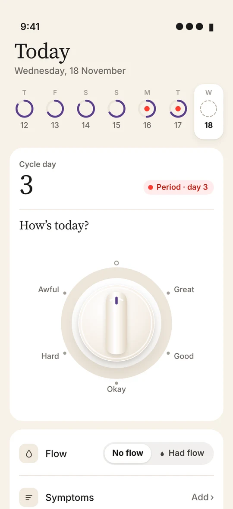
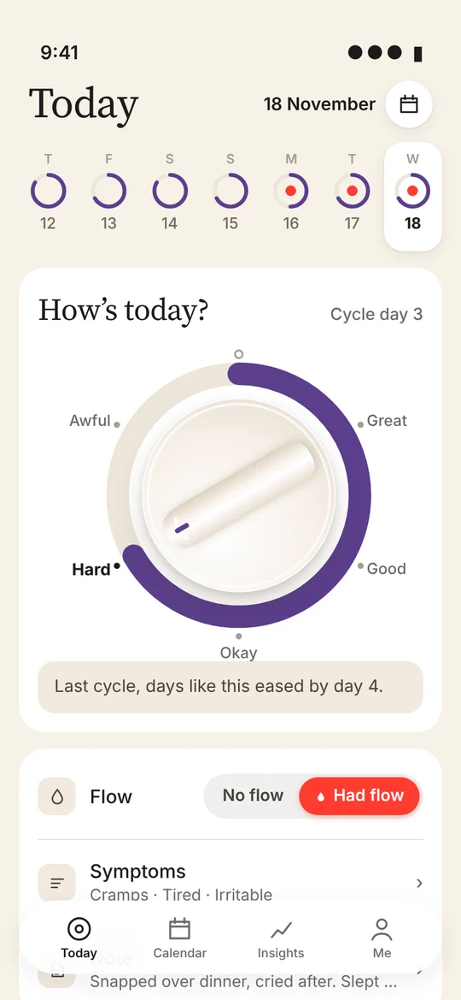
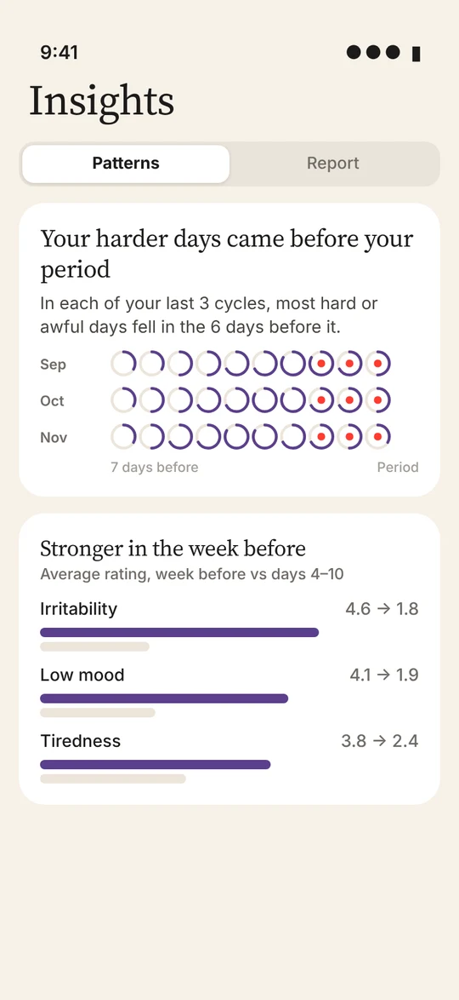
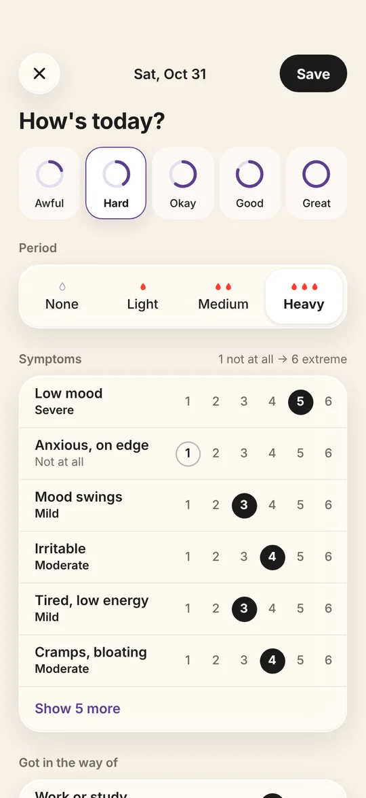
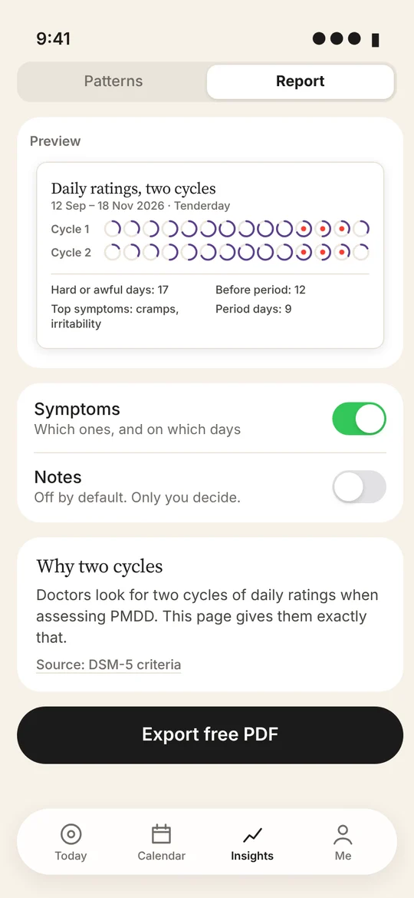
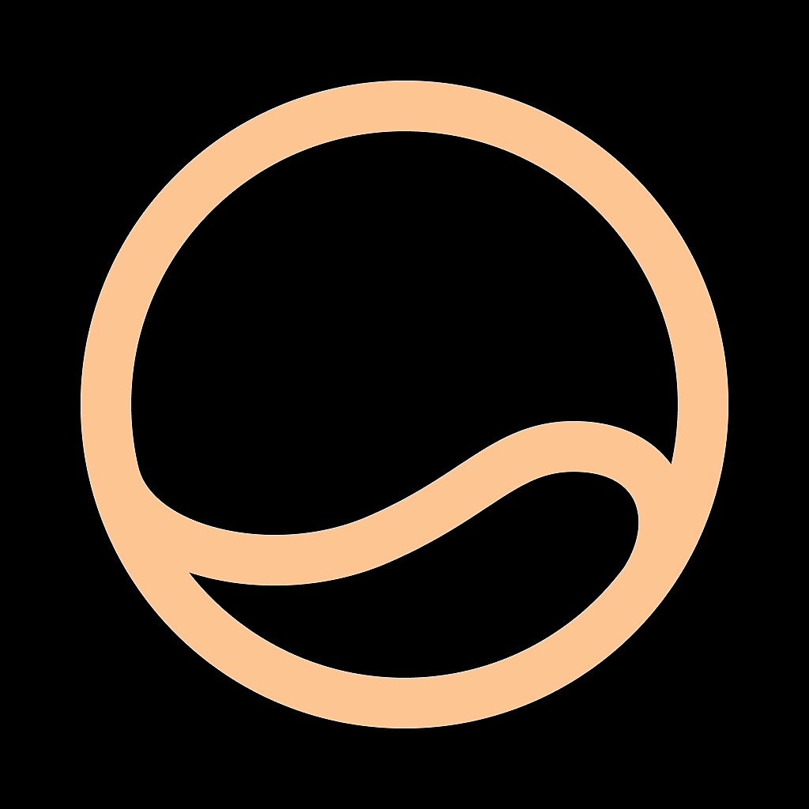
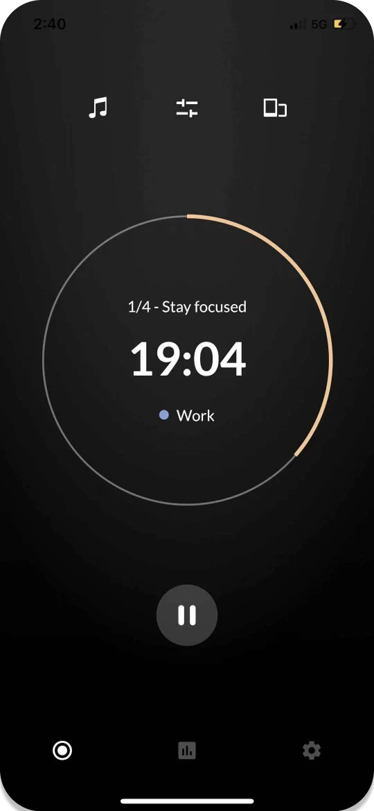
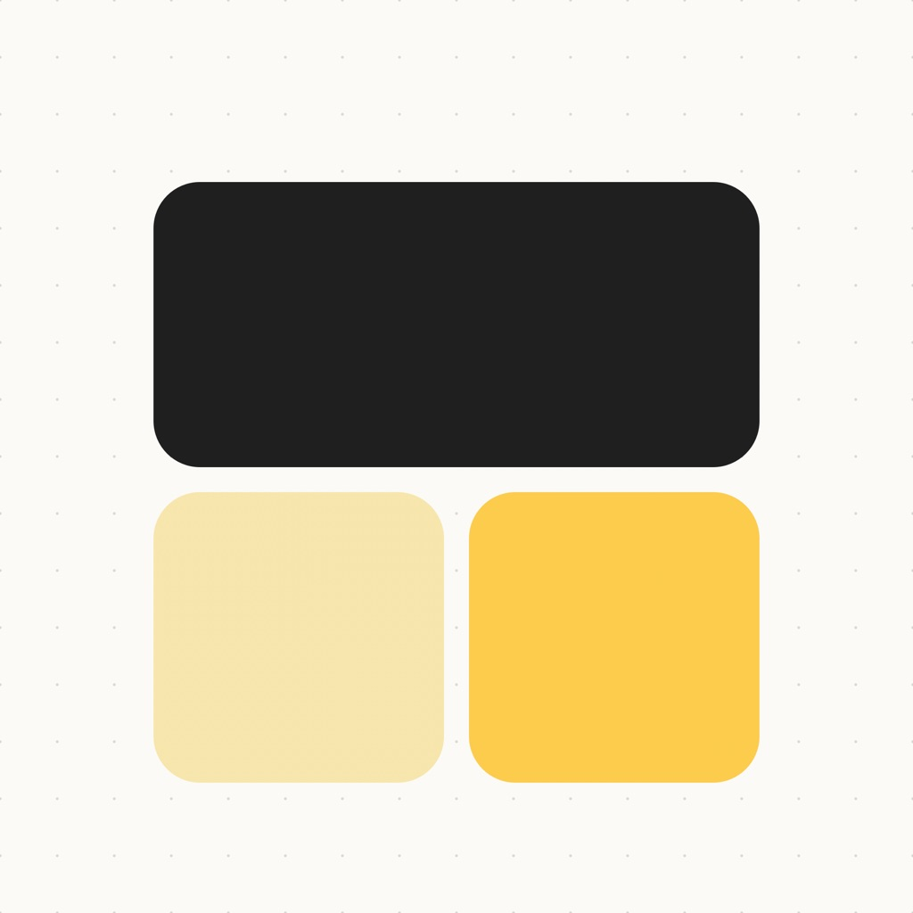

TenderdayPMS & PMDD diary · iPhoneA private PMDD & PMS tracker. One ring a day.
Turn the dial for how today felt, mark your period, and after two cycles see when your harder days come. Then bring a free PDF symptom report to your doctor.

How it works
Turn the dial. That’s today logged.
Great, Good, Okay, Hard or Awful: one turn fills the day’s ring. A fuller ring is a harder day, and a red dot marks a period day. Symptoms and a short note are there when you want them.


Your day
Period, symptoms and a note, when you want them.
Tap Had flow on period days and a red dot joins the ring. Add symptoms or a short note in a tap. On a hard day, Tenderday shows how days like it went last cycle.
Insights
Knowing it’s the week before, not you.
After two cycles, Insights lines your days up against your period and shows when the harder days come, and which symptoms rise in the week before. Many people find those days easier to meet once they can see them coming.


Full symptom log
A complete daily record, ready for your doctor.
On days you want more than the dial, open the full check-in. Rate 13 mood and body symptoms, from low mood, anxiety and irritability to cramps, breast tenderness and sleep, plus what they got in the way of: work, plans and people. Each uses the same 1 to 6 scale as the daily record clinicians use to assess PMDD. Every symptom starts at “not at all”, so a calm day needs no taps.
Report for your doctor
Bring two cycles to your appointment.
Export a free PDF with two cycles of daily ratings, period days and your top symptoms on one page: the daily record doctors ask for when they assess PMDD. Notes stay out unless you switch them on, and nothing is ever sent for you.

Private by design
No account. Your diary stays on your iPhone and in your own backup. No ads, no trackers, never sold.
Works with Apple Health
Bring in your period dates from Apple Health, read only. Nothing is written back.
Gentle on hard days
No streaks to break and no scores. Log in a second, skip a day, come back when you can.
PMDD and PMS tracking: common questions
What is PMDD?
Premenstrual dysphoric disorder (PMDD) is a severe, cyclical condition linked to the menstrual cycle. Mood symptoms such as irritability, low mood, anxiety or rage appear in the week or two before a period and ease within a few days after it starts. The International Association for Premenstrual Disorders (IAPMD) estimates it affects about 1 in 20 people who menstruate.
How do I track PMDD or PMS symptoms?
Rate how each day felt and note your symptoms every day, including the good days, and mark your period. Patterns only show up across whole cycles, so a short daily log is more useful than occasional notes. Tenderday makes the daily log one turn of a dial.
How long should I track before seeing a doctor about PMDD?
Clinicians usually look for prospective daily ratings across at least two menstrual cycles before confirming PMDD (DSM-5 criteria). Tenderday’s free PDF report puts two cycles of daily ratings, period days and top symptoms on one page.
Is Tenderday also a PMS tracker?
Yes. Tenderday is for anyone whose mood, energy or pain changes with their cycle, from PMS to PMDD and period pain.
Does Tenderday diagnose PMDD?
No. Tenderday records and describes how your days go. It does not diagnose, predict or give medical advice; bring your report to a doctor.
Is my data private?
Yes. There is no account. Your diary stays on your iPhone and in your own iPhone backup, with no ads or trackers, and it is never sold. Apple Health access is read only.
What happens to my diary if I get a new iPhone?
Your diary is included in your iPhone’s normal iCloud or computer backup. Restore that backup on your new iPhone and your diary comes with it. You can also export all your entries as a CSV file at any time from Me.
How much will Tenderday cost?
Tenderday will be free to download, and exporting the doctor report is free.
When is Tenderday available?
Tenderday is planned for iPhone in December 2026. Leave your email above to hear when it launches or to join the beta.
Not sure if it’s PMDD? Take the free 2-minute PMDD self-check.
Sources: IAPMD, About PMDD · US Office on Women’s Health, Premenstrual syndrome · American Psychiatric Association, DSM-5.
Be the first to try Tenderday.
Tenderday records and describes how your days go. It does not diagnose or predict, and it is not a substitute for medical care.
More from Foca Studio

FocaPomodoro timer · iPhone, Mac & Android Focus, thenstretch.
A calm focus timer with ambient sounds and guided stretch breaks.
Meet Foca →

DayfoldCountdown widgets · iPhone Fold a page.Remember a day.
Countdowns and anniversaries as cards on your Home and Lock Screen.
Meet Dayfold →